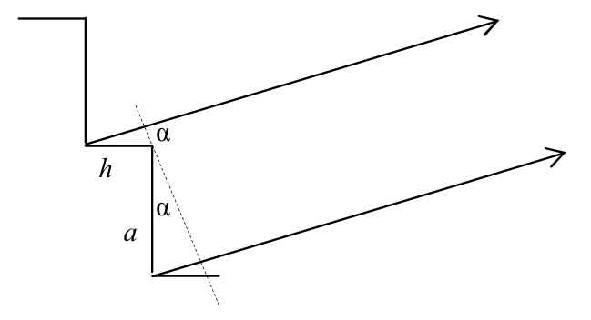
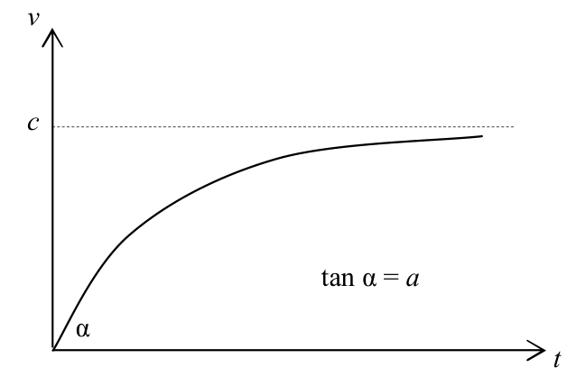
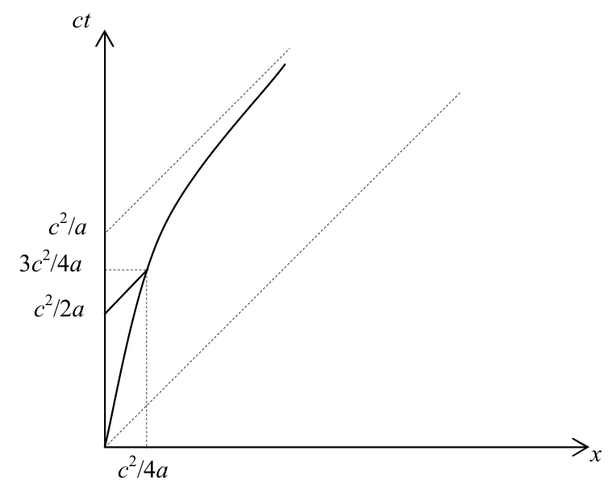
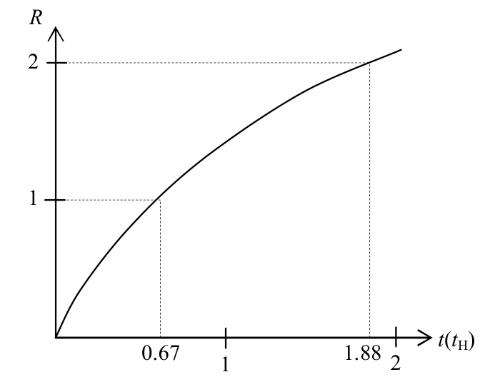
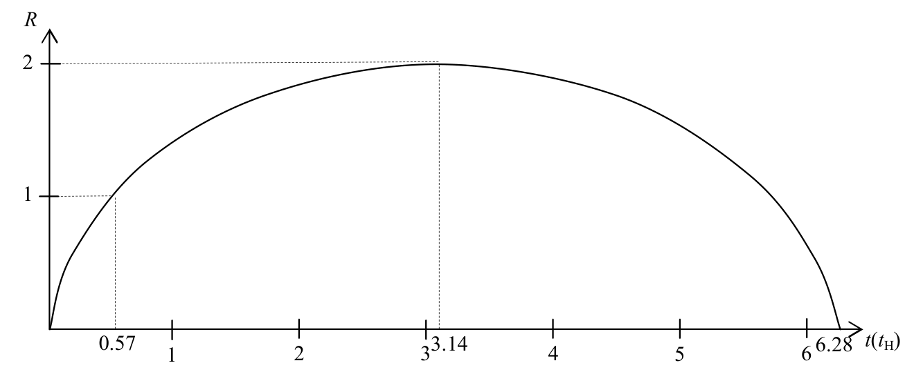
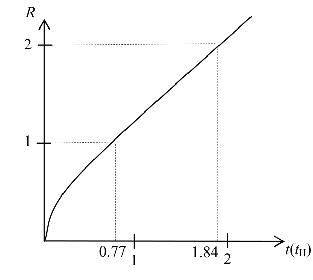

원문: 3rd Romanian Master of Sciences 2010, Physics – Theoretical Tour (solutions). 배점은 원문대로 pt로 표기한다.
퓨즈(fuse) F는 단락 회로(short-circuit)로 작용하므로 퓨즈 양단의 전압은 0이다. 따라서 $R_1$에는 전류 $I_1$이 흐르지 않는다: $I_1 = 0$. 0.25 pt
$t = 0$일 때 $L_2$에는 전류가 흐르지 않으며, 퓨즈 양단의 전압이 0이므로 전류 $I_2$는 0이다: $I_2 = 0$. 0.25 pt
인덕턴스(inductance) $L_1$ 양단에 걸린 일정한 전압 $V$에 의해 $I$는 일정한 비율 $V/L_1 = 1000\ \text{A/s}$로 증가한다. 0.25 pt
전류 $I$는 모두 퓨즈로 흐른다: $I_F = I$. 0.25 pt
퓨즈가 녹는 조건은 $t = L_1 I_F / V = 0.2\ \text{ms}$에서 실현된다. 0.5 pt
퓨즈가 녹으면 전류 $I_F$는 사라진다: $I_F = 0$. 0.25 pt
퓨즈가 녹은 직후, 전류 $I$는 녹기 직전의 값을 유지한다: $I = 200\ \text{mA}$. 0.25 pt
$L_2$에 흐르는 전류는 불연속적으로 변하지 않는다(도약이 없다). 따라서 퓨즈가 녹은 직후 $I_2 = 0$이다. 0.25 pt
키르히호프 제1법칙(Kirchhoff’s first law)에 따라, 퓨즈가 녹은 직후 $R_1$에 흐르는 전류 $I_1$은 200 mA이며, 이로 인해 $R_1$ 양단에 200 V의 전압 강하가 생기고 오른쪽이 “+”극이 된다. 0.25 pt
그 결과 $L_1$ 양단에는 $V - R_1 I_F = 200\ \text{V} - 10\ \text{V} = 190\ \text{V}$의 전압이 생기고, 이 전압은 $I$를 비율 $\Delta I/\Delta t$로 변화시키는데, 그 크기는 $(V - R_1 I_F)/L_1 = 19000\ \text{A/s}$이다. 퓨즈가 녹은 직후의 전압 극성 때문에 $I$는 위의 비율로 감소한다. 0.5 pt
$R_1$ 양단의 200 V 전압 강하는 $I_2$를 증가시킨다. 퓨즈가 녹은 직후 $R_2$ 양단의 전압 강하는 0이므로, 퓨즈가 녹은 직후 $I_2$는 $40000\ \text{A/s}$의 비율로 증가한다. 0.25 pt
키르히호프 제1법칙으로부터, 퓨즈가 녹은 직후 전류 $I_1$은 $59000\ \text{A/s}$의 비율로 감소한다. 0.5 pt
$I_1 = 10\ \text{mA}$ 0.25 pt
$I_2 = 50\ \text{mA}$ 0.25 pt
$I = 60\ \text{mA}$ 0.25 pt

$\alpha = 0$일 때 이웃한 두 광선 사이의 경로차(path length difference) $\delta$는 $(n-1)h$임이 명백하다. 이 차이는 $\alpha$에 따라 증가한다.
$$\delta = nh + a\sin\alpha - h\cos\alpha = (n-1)h + a\sin\alpha + h(1-\cos\alpha)\,.$$ $$\delta = k\lambda\,,\quad k\in\mathbb{N}\,.$$주어진 구체적인 예에서는 $\alpha = 0$, $k_0 = 10{,}000$에서 회절 극대(diffraction maximum)가 나타남을 알 수 있다. 따라서 주극대(principal maxima)의 조건은 다음과 같이 쓸 수 있다.
$$a\sin\alpha + h(1-\cos\alpha) = p\lambda\,,\quad p = k - k_0 > 0\,.$$폭이 $a$인 슬릿에 의해 회절된 빛의 세기는 편향각에 따라 다음과 같이 변한다는 것이 알려져 있다.
$$I(\alpha) = I_0\left[\frac{\sin\left(\dfrac{\pi a\sin\alpha}{\lambda}\right)}{\dfrac{\pi a\sin\alpha}{\lambda}}\right]^2 .$$첫 번째 회절 극소는 다음에서 나타난다.
$$\frac{\pi a\sin\alpha}{\lambda} = \pi \Rightarrow \sin\alpha = \frac{\lambda}{a} = 5\cdot10^{-5}\,.$$이처럼 작은 각에 대해서는
$$\delta \approx a\alpha + h\frac{\alpha^2}{2} \approx a\alpha \approx a\sin\alpha = p\lambda\,.$$ $$\sin\alpha < \frac{\lambda}{a} \Rightarrow p < 1 \Rightarrow p = 0 \Rightarrow k = k_0\,.$$따라서 관측할 수 있는 주극대는 “중앙” 극대 하나뿐이다.
빛의 파장을 $\Delta\lambda$만큼 증가시키면 이러한 중앙 극대 두 개가 겹칠 수 있다.
$$k_0\lambda = (k_0-1)(\lambda+\Delta\lambda) \Rightarrow \Delta\lambda \approx \frac{\lambda}{k_0} = 0.5\ \text{Å}\,.$$로켓 기준계(reference frame)에서의 모든 물리량은 프라임(′)을 붙여 나타낸다.

로켓의 운동량은 시간에 따라 균일하게 증가한다.
$$\frac{\mathrm{d}p_x}{\mathrm{d}t} = \text{const} \Rightarrow \frac{v_x}{\sqrt{1-\left(\dfrac{v_x}{c}\right)^2}} = at \Rightarrow v_x(t) = c\,\frac{\dfrac{at}{c}}{\sqrt{1+\left(\dfrac{at}{c}\right)^2}}\,.$$(여기서 $v_x(0) = 0$임을 고려하였다.) 지구 기준계에서 로켓의 가속도는 다음과 같다.
$$a_x(t) = \frac{\mathrm{d}v_x}{\mathrm{d}t} = \frac{a}{\left(1+\left(\dfrac{at}{c}\right)^2\right)^{\frac32}}\,.$$$x$축 방향 가속도의 로런츠 변환(Lorentz transformation)은 다음과 같다.
$$a_x = a'_x\left(\frac{\sqrt{1-\dfrac{V^2}{c^2}}}{1+\dfrac{V}{c^2}v'_x}\right)^3 .$$$V = v_x$로 두면 $v'_x = 0$이 되므로, 우주 비행사의 “무게”는 다음과 같이 주어진다.
$$a'_x(t) = \frac{a_x}{\left(1-\dfrac{v_x^2}{c^2}\right)^{\frac32}} = a \Rightarrow W = ma\,.$$거리는 시간에 따라 점근적으로(asymptotically) 증가한다.
$$\lim_{t\to\infty}\frac{x(t)}{t} = c\,;\quad \lim_{t\to\infty}\bigl(x(t)-ct\bigr) = -\frac{c^2}{a}\,.$$점근선(asymptote)의 방정식은 다음과 같다.
$$x(t) = ct - \frac{c^2}{a} = c\left(t-\frac{c}{a}\right).$$그림은 g를 보라.
도표에서 보듯이, 충분히 긴 시간이 지나면 우주선의 운동은 지구 시각 $c/a$에 지구에서 방출된 빛 신호의 운동에 한없이 가까워진다.
첫 번째 신호가 로켓에 도달하는 지구 시각은 다음으로 주어진다.
$$x(t) = c\left(t-\frac{c}{2a}\right) \Rightarrow t = \frac34\,\frac{c}{a}\,.$$그 순간 로켓의 위치와 속도는 각각 다음과 같다.
$$x\left(\frac34\,\frac{c}{a}\right) = \frac{c^2}{4a}\quad\text{그리고}\quad v_x\left(\frac34\,\frac{c}{a}\right) = \frac35\,c\,.$$$T'$을 구하려면, 지구 기준계의 무한히 작은 시간 간격 $\mathrm{d}t$ 각각에 대응하는 로켓 기준계의 시간 간격 $\mathrm{d}t'$을 모두 더해야 한다.
$$\mathrm{d}t' = \mathrm{d}t\sqrt{1-\frac{v_x^2}{c^2}} = \frac{\mathrm{d}t}{\sqrt{1+\left(\dfrac{at}{c}\right)^2}} \Rightarrow T' = \int_0^{\frac34\frac{c}{a}}\mathrm{d}t' = \frac{c}{a}\ln 2 \approx 0.7\,\frac{c}{a}\,.$$
도플러 효과(Doppler effect) 공식으로부터 다음을 얻는다.
$$\nu' = \nu_0\sqrt{\frac{c-v_x}{c+v_x}} = \frac12\,\nu_0\,.$$도플러 효과 공식을 한 번 더 적용하면 다음을 얻는다.
$$\nu = \frac14\,\nu_0\,.$$우선 $\mathbf{v}$와 $\mathbf{r}$은 같은 방향이어야 함이 명백하다. 둘째로, 임의의 두 위치 벡터의 팽창은 어느 순간에나 그들 사이에 이미 존재하는 비례 관계를 보존해야 한다. 즉,
$$\frac{r_1(t)}{r_2(t)} = \frac{r_1(t+\mathrm{d}t)}{r_2(t+\mathrm{d}t)} = \frac{r_1+v_1\mathrm{d}t}{r_2+v_2\mathrm{d}t} = \frac{v_1(t)}{v_2(t)}\,.$$따라서 허블 법칙(Hubble’s law)은 다음과 같다.
$$\vec v(t) = H(t)\cdot\vec r(t)\,.$$공간의 한 점, 예를 들어 지구에서 본 두 은하를 A, B라 하자. 허블 법칙에 따라
$$\vec v_\mathrm{A} = H(t)\cdot\vec r_\mathrm{A}\,,\qquad \vec v_\mathrm{B} = H(t)\cdot\vec r_\mathrm{B}\,.$$두 식을 빼면 다음을 얻는다.
$$\left(\vec v_\mathrm{B}-\vec v_\mathrm{A}\right) = H\left(\vec r_\mathrm{B}-\vec r_\mathrm{A}\right).$$따라서 은하 A에 대한 은하 B의 상대 속도는 그 은하에 대한 B의 상대 위치에 비례하며, 비례 상수는 같은 허블 상수이다.
다음을 가정하면
$$\vec r(t_0) = \vec v(t_0)\cdot t_0\,,$$다음을 얻는다.
$$\vec v(t_0) = H(t_0)\cdot\vec v(t_0)\cdot t_0 \Rightarrow t_0 = \frac{1}{H_0}\,.$$$\Omega > 1$이면 팽창은 결국 멈추고, 그 뒤 우주는 수축하기 시작하여 사라질 때까지 줄어든다.
$\Omega = 1$이면 우주는 계속 팽창하며, 후퇴 속도(recessional velocity)가 0에 접근하면서 무한대에 다가간다.
$\Omega < 1$이면 우주는 0이 아닌 후퇴 속도로 무한대까지 팽창한다.
$E = \text{const}$이므로 $1-\Omega(t)$의 부호는 시간에 따라 변하지 않는다.
$R_0 = 1$이므로 $t_0 = 2/3\ t_\mathrm{H}$를 얻는다.

이제
$$x = \frac{\Omega_0-1}{\Omega_0}R \Rightarrow \left(\frac{\Omega_0}{\Omega_0-1}\right)^{\frac32}\sqrt{\frac{x}{1-x}}\,dx = H_0\sqrt{\Omega_0}\,dt \Rightarrow \arcsin\sqrt x - \sqrt{x(1-x)} = \frac{H_0}{\Omega_0}\left(\Omega_0-1\right)^{\frac32}t\,.$$(여기서 $x(0) = 0$임을 고려하였다.) 따라서
$$t(R) = \frac{\Omega_0}{H_0\left(\Omega_0-1\right)^{\frac32}}\left[\arcsin\sqrt{\frac{\Omega_0-1}{\Omega_0}R} - \sqrt{\frac{\Omega_0-1}{\Omega_0}R\left(1-\frac{\Omega_0-1}{\Omega_0}R\right)}\,\right].$$
이제
$$x = \frac{1-\Omega_0}{\Omega_0}R \Rightarrow \left(\frac{\Omega_0}{1-\Omega_0}\right)^{\frac32}\sqrt{\frac{x}{1+x}}\,dx = H_0\sqrt{\Omega_0}\,dt \Rightarrow -\operatorname{arcsinh}\sqrt x + \sqrt{x(1+x)} = \frac{H_0}{\Omega_0}\left(1-\Omega_0\right)^{\frac32}t\,.$$(여기서 $x(0) = 0$임을 고려하였다.) 따라서
$$t(R) = \frac{\Omega_0}{H_0\left(1-\Omega_0\right)^{\frac32}}\left[-\operatorname{arcsinh}\sqrt{\frac{1-\Omega_0}{\Omega_0}R} + \sqrt{\frac{1-\Omega_0}{\Omega_0}R\left(1+\frac{1-\Omega_0}{\Omega_0}R\right)}\,\right].$$